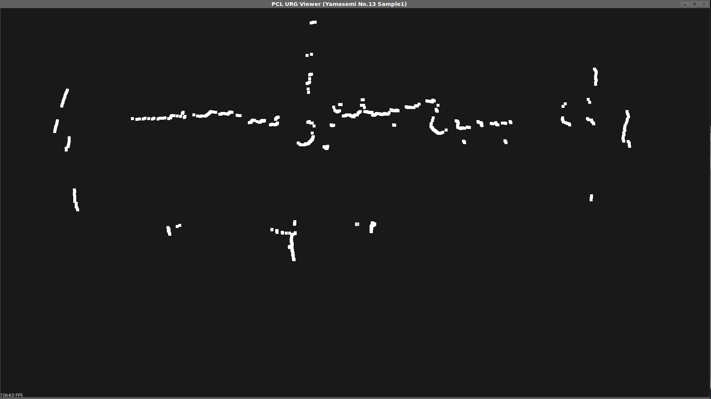

サンプルプログラム1
概要
URGの取得データをPCLで可視化するプログラムです。
URGから取得した点群をPointCloudクラスに代入してCloudViewerで可視化します。

↑可視化された反射点群
使いかた
-
まず、sample1のbuildディレクトリに移動して、
cmake ..
と入力します。これで、CMakeLists.txtに書かれた情報を元に、CMakeがmakefileを作成します。
-
作成したmakefileを使って、srcディレクトリにあるsample1.cppをコンパイルします。次のように入力します。
make
これでsample1.cppのコンパイルが始まります。
以下のように出力されればOK。binディレクトリにsample1という実行ファイルが出来るはずです。
[100%] Building CXX object CMakeFiles/sample1.dir/sample1.cpp.o
Linking CXX executable sample1
[100%] Built target sample1
-
PCとURGを接続し、URGを起動します
※URGはClassic-URGにしてください。
-
最後にbinディレクトリに移動して
./sample1
と入力して実行するとビューワーが開かれて上のような画面が見えるはずです。
※私の環境ではデフォルトでものすごくズームされていたので、マウスホイールでズームアウトしないと見えませんでしたが・・・
マウスドラッグで視点を変更できます。
「+」キー(「Shift」+「;」キー)で点を大きくできます。
端末でctrl-cを入力するか、ビューワーを閉じるとプログラムは終わります。
readmeのトップへ戻る